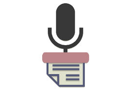

Benefícios da Transcrição em áudio
A transcrição de áudio oferece diversos benefícios,
incluindo acessibilidade para pessoas com deficiência auditiva,
facilidade de referência, melhor compreensão para alguns indivíduos,
SEO aprimorado, facilitação da tradução e localização, arquivamento eficiente,
apoio à análise, revisão e edição simplificadas, suporte ao aprendizado de idiomas
e conformidade com regulamentos e legislação.